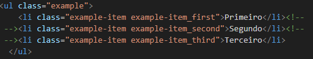

ALINHA MAS PERDE OS "WIDTHs" E "HEIGHTs"
- Primeiro
- Segundo
- Terceiro
________________________________________________________________________________________________________
Temos 3 tags <li> dentro de uma <ul>. Todas <i> vão ter 150px de altura (height: 150px) e a largura vai ser de 33.333% (width: 33.333%). Ah! A primeira <li> será da cor laranja (background-color: #FAA116), a segunda da cor verde (background-color: #57C7C3) e a terceira, e última, da cor azul (background-color: #3B97D3).
________________________________________________________________________________________________________
Vamos implementar o display: inline; para todas as tags <li> no nosso arquivo
________________________________________________________________________________________________________
display: inline;
Só adicionamos essa linha acima no css para todas as 3 <li>
________________________________________________________________________________________________________
No final das <li>'s, um enter cria espaço.
Para não criar uma linha unica, gigante, colocar um comentario.

Max só width 90%

100x56
700x393
1000 x 562
________________________________________________________________________________________________________
1000 x 562 Fora do MAIN

1500 x 785 Fora do MAIN